First look at the gnomAD SV catalog
Mar 31 2019 genome svEdit April 1 2019: I added columns with the proportion of variants with PASS filter in the tables about the END/POS confusion and duplicated variants.
Edit September 23 2019: Some tables (SV types, methods), investigation of the inconsistent CHR2/END for a few SVs.
The recent gnomAD-SV catalog is potentially a great resource that we could use to annotate SV calls or augment genome graphs with. For now there is a preprint on bioRxiv and a comprehensive blog post that explains how the SVs were called and how to use the catalog.
I had a quick look at these variants and here are my observations/notes. I’m using the following VCF file from the gnomAD download page: gnomad_v2_sv.sites.vcf.gz.
TL;DR
- The vast majority of SVs look good and there is a lot of information in the VCF.
- Some insertions and complex variants have contradicting POS/END fields (not sure what to do with those).
- Thousands of SVs are so similar that they could be the same SVs that weren’t merged.
- In a few cases, duplicates might lead to under-estimating the allele frequency.
- Take-home message: don’t annotate SVs using only the best matching SV in gnomAD.
- Most likely, the majority of variants are not really sequence-resolved (like in most SV catalogs).
SV types
| SVTYPE | n |
|---|---|
| DEL | 199,498 |
| INS | 115,407 |
| BND | 72,411 |
| DUP | 51,428 |
| CPX | 5,249 |
| MCNV | 1,148 |
| INV | 707 |
| CTX | 9 |
Detection methods
How many variants are supported by each method, for each SV type:
| method | BND | CPX | CTX | DEL | DUP | INS | INV | MCNV |
|---|---|---|---|---|---|---|---|---|
| delly | 46,210 | 5,050 | 0 | 122,492 | 24,669 | 2,360 | 685 | 185 |
| depth | 0 | 1 | 0 | 38,102 | 21,607 | 16 | 0 | 948 |
| manta | 31,510 | 1,516 | 9 | 75,089 | 22,809 | 31,222 | 181 | 77 |
| melt | 0 | 0 | 0 | 0 | 17 | 83,420 | 0 | 0 |
Note: the same variant is counted several times in this table if it is supported by multiple methods.
Interesting to see that MELT supports a few duplications (are they MEI close to an existing TE?) and that read depth changes support a few insertions (maybe some very recent MEI?).
Allele frequency
- AF field: sometimes one value (when biallelic), sometimes multiple values.
- Only MCNVs contain multiple AF values (one for each copy number).
- All MCNVs have a CN=2 allele.
I want one value of allele frequency per variant so I sum up the AF values across alleles excluding the CN=2 allele for MCNVs.
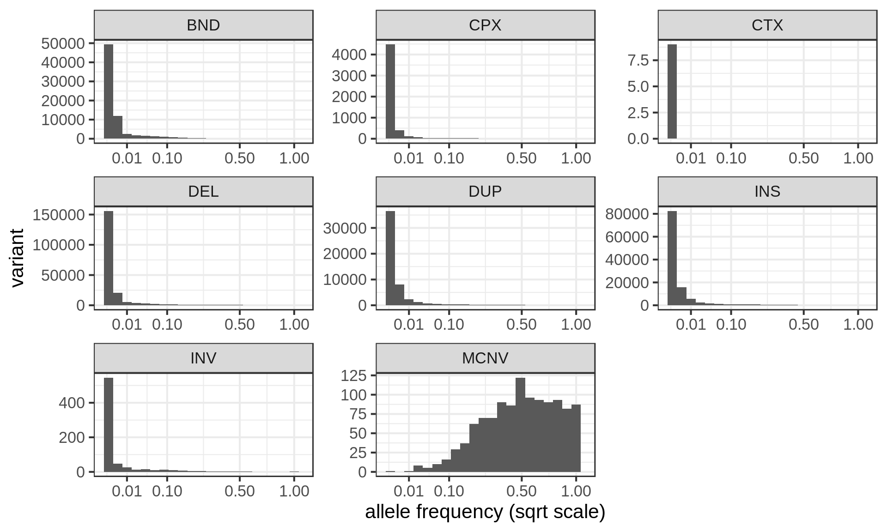
Size distribution
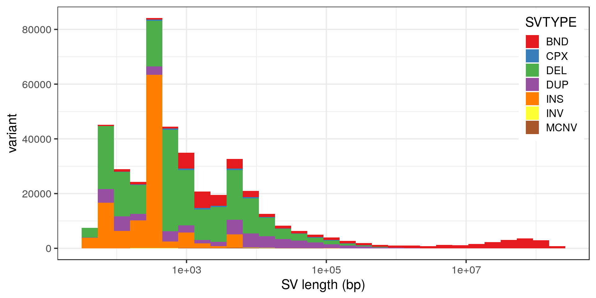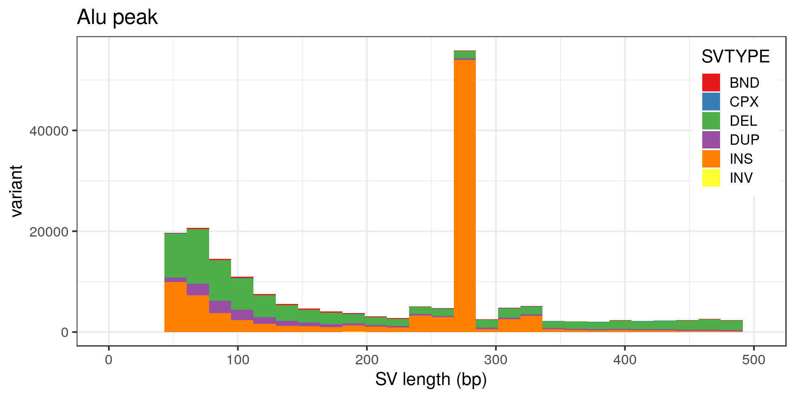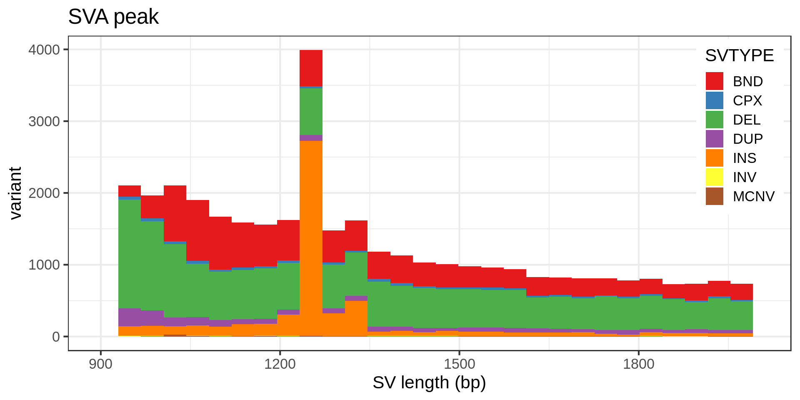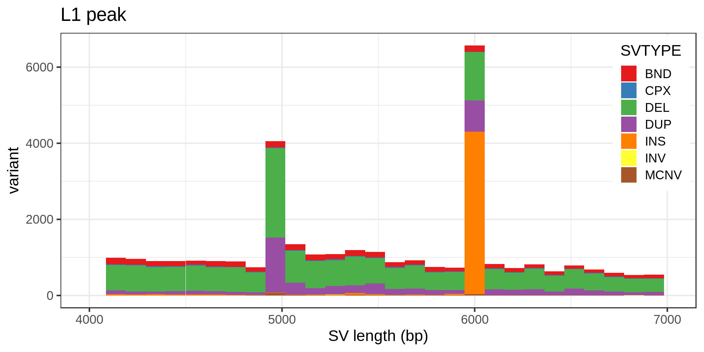
The peak at 5 kbp is a bit puzzling. Maybe it’s a technical artifact, e.g. due to a method that detects DEL/DUP only down to 5 kbp. Looking at the variants with absolute SVLEN of exactly 5 kbp:
| methods | n |
|---|---|
| depth | 3,185 |
| delly_depth | 3 |
| delly | 2 |
| delly_depth_manta | 2 |
| manta | 1 |
It’s most likely an artifact of the depth algorithm. Does it affect the allele frequency distribution?
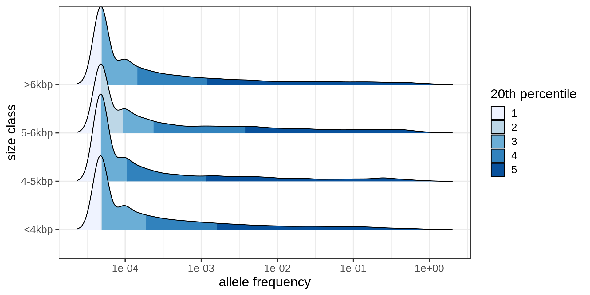
The tail of the distribution is longer in the 5-6 kbp class.
SV coordinates confusion
It seems like the END value is not always larger than the position POS in the VCF. Most of it comes from CTX (reciprocal chromosomal translocation) variants or translocations which makes sense: the END might relate to the second breakpoint, potentially anywhere in the genome.
| SVTYPE | end.before.pos | prop | prop.PASS |
|---|---|---|---|
| INS | 358 | 0.0031 | 0.9973 |
| CPX | 289 | 0.0551 | 0.9737 |
| BND | 44 | 0.0006 | 0.0000 |
| CTX | 6 | 0.6667 | 1.0000 |
| DEL | 0 | 0.0000 | 0.8833 |
| DUP | 0 | 0.0000 | 0.9772 |
| INV | 0 | 0.0000 | 0.9986 |
| MCNV | 0 | 0.0000 | 0.0000 |
Some are insertions and I’m not sure how to interpret them. The vast majority of these variants have a PASS filter.
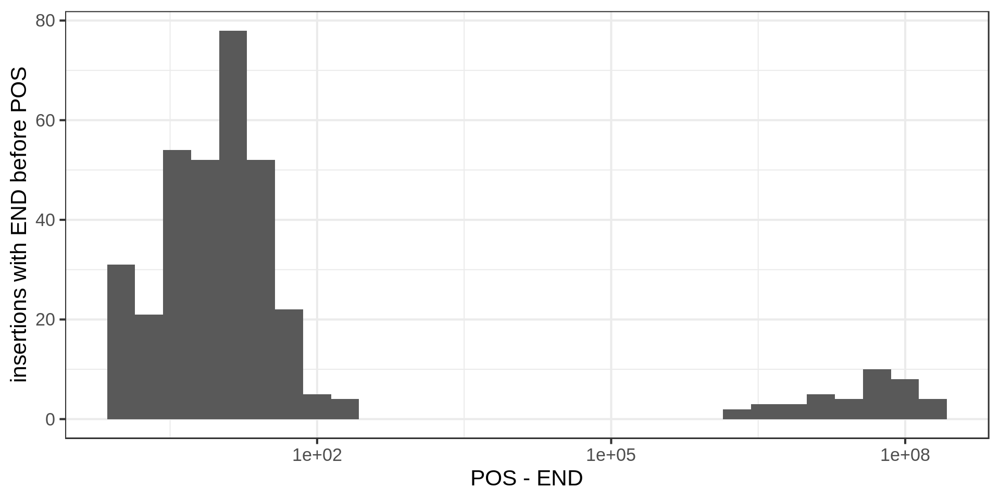
For most of these insertions the END is not that far from the POS (<100bp) but for some the END and POS are hundreds of kbp apart. Hum. Let’s have a look at some of those:
## GRanges object with 3 ranges and 13 metadata columns:
## seqnames ranges strand |
## <Rle> <IRanges> <Rle> |
## gnomAD_v2_INS_4_34681 4 [116015282, 116015282] * |
## gnomAD_v2_INS_2_13594 2 [ 85885163, 85885163] * |
## gnomAD_v2_INS_9_69619 9 [ 28199346, 28199346] * |
## paramRangeID REF ALT
## <factor> <DNAStringSet> <CharacterList>
## gnomAD_v2_INS_4_34681 <NA> N <INS:ME:ALU>
## gnomAD_v2_INS_2_13594 <NA> N <INS:ME:ALU>
## gnomAD_v2_INS_9_69619 <NA> N <INS>
## QUAL FILTER SVTYPE SVLEN
## <numeric> <character> <character> <integer>
## gnomAD_v2_INS_4_34681 646 PASS INS 281
## gnomAD_v2_INS_2_13594 652 PASS INS 279
## gnomAD_v2_INS_9_69619 407 PASS INS 136
## END CHR2 CPX_TYPE methods
## <integer> <character> <character> <character>
## gnomAD_v2_INS_4_34681 44565090 4 <NA> delly_manta_melt
## gnomAD_v2_INS_2_13594 8372664 2 <NA> delly_manta_melt
## gnomAD_v2_INS_9_69619 17898584 9 <NA> delly_manta
## ID AF
## <character> <numeric>
## gnomAD_v2_INS_4_34681 gnomAD_v2_INS_4_34681 0.001490
## gnomAD_v2_INS_2_13594 gnomAD_v2_INS_2_13594 0.005355
## gnomAD_v2_INS_9_69619 gnomAD_v2_INS_9_69619 0.057464
## -------
## seqinfo: 24 sequences from an unspecified genomeI don’t see anything else suspicious.
For complex variants, the POS and END are always less than 100 bp apart and all for one type of complex SV: “dispersed duplications”. If I understand correctly, this type of complex SV is pretty much an insertion of a sequence already in the genome (but not a transposable element I guess?).
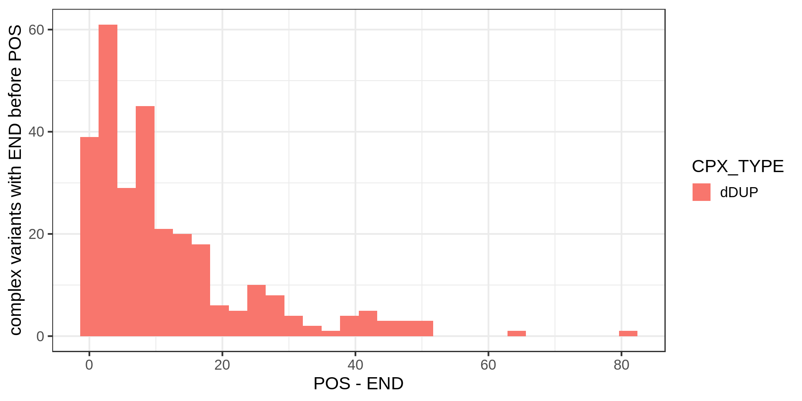
I’m not sure how to interpret them either.
For now, I’ll use the POS field for both insertions and dispersed duplications when manipulating the variants as genomic intervals. So I’ll assume that they are both simple insertions (which I think is fair enough).
Potential duplicates
Are there any pairs of variants with a reciprocal overlap higher than 90%? For insertions, I match them if they are located at less than 30 bp from each other and their size is 90% similar.
Note: Here I don’t consider BND or CTX variants, and I count each pair of variants only once.
| types | n | prop.both.PASS |
|---|---|---|
| DEL_DEL | 3,335 | 0.8237 |
| INS_INS | 2,221 | 0.9955 |
| DUP_DUP | 2,057 | 0.9728 |
| CPX_CPX | 1,077 | 0.0529 |
| DEL_DUP | 797 | 0.8821 |
| CPX_DEL | 253 | 0.9921 |
| DEL_MCNV | 117 | 0.0000 |
| CPX_DUP | 66 | 0.9091 |
| DUP_MCNV | 50 | 0.0000 |
| DEL_INV | 10 | 1.0000 |
| CPX_INS | 6 | 1.0000 |
| DUP_INV | 2 | 1.0000 |
| CPX_INV | 1 | 1.0000 |
| INV_INV | 1 | 1.0000 |
There are thousands of deletions, insertions and duplications with high reciprocal overlap. Also many complex variants but I can imagine that it’s difficult to merge those. For the vast majority of pairs, both variants have a PASS filter. However, for most of the complex variants duplicates, one of the variant doesn’t have a PASS filter. Using FILTER==PASS would remove almost all the complex SV duplicates.
Let’s look at the size distribution of these potential duplicates.
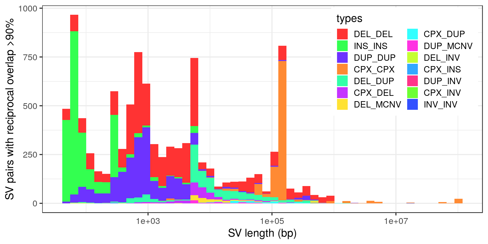
Wow, very “peaky”. Let’s zoom in with no log-scale:
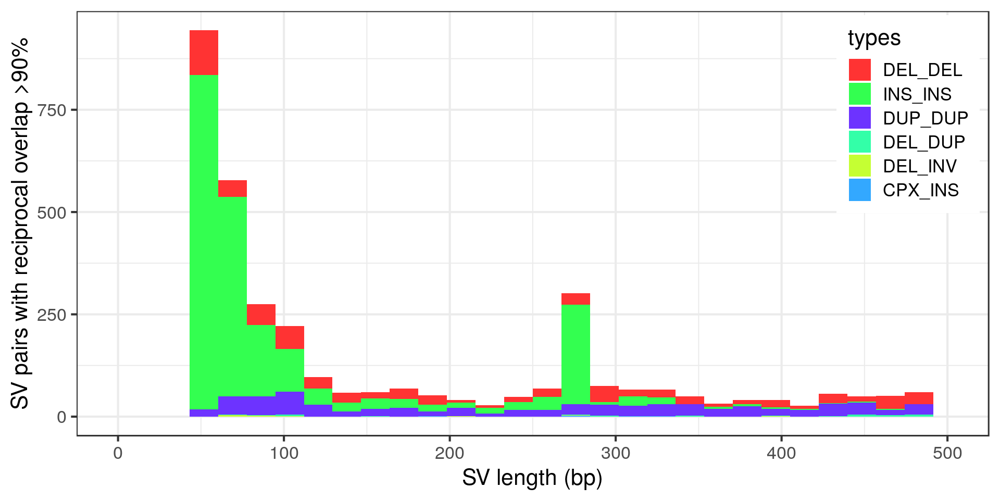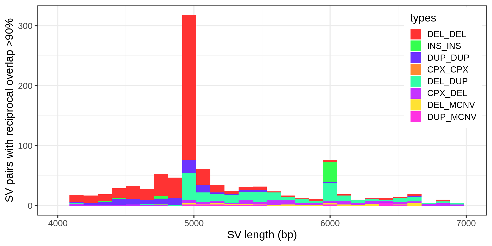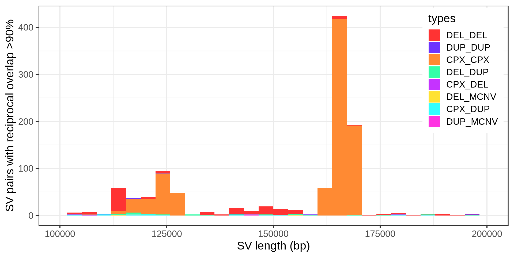
- The “Alu” peak around 300 bp is made of around 200 insertion pairs.
- The “L1” peak around 6 kbp is made of around 30 insertion pairs and almost as many duplication pairs.
- Again the technical peak at 5 kbp, here mostly pairs of deletions.
- The complex variants that are potentially duplicated form two size clusters.
SV calling method
Duplicates can occur when merging two sets of variants, for example the call sets of different methods. Are the potential duplicates from different methods?
Top 10 of the most common pairs:
| types | methods | n | prop.both.PASS |
|---|---|---|---|
| INS_INS | manta__manta | 1,639 | 0.9969 |
| DEL_DEL | delly__delly | 1,110 | 0.6009 |
| DEL_DEL | manta__manta | 652 | 0.9417 |
| DUP_DUP | delly__delly | 576 | 0.9688 |
| CPX_CPX | delly__delly | 528 | 0.0436 |
| INS_INS | melt__melt | 489 | 0.9918 |
| DUP_DUP | manta__manta | 443 | 0.9842 |
| DEL_DUP | depth__depth | 395 | 0.8785 |
| DUP_DUP | delly__manta | 376 | 0.9787 |
| DEL_DEL | delly__manta | 319 | 0.9310 |
For thousands of potential duplicates the variants were called by the same algorithm. The question is then: were these methods run once in a “single-sample” mode or on all the samples together? I think at least Delly and MELT can do the genotyping step across all samples together. Even in those, there can be duplicates in the discovery phase that are not merged properly before genotyping.
I’m still not sure if these deletions/duplications/MEIs are actually different SVs. Especially the mobile element insertions, I would lean toward them being duplicates. Otherwise, it means the TE jumped and then got an indel later. It’s possible but maybe not that often. Also, the comparison with GiaB below shows that we are not there yet in term of bp resolution. It might be safer to assume these variants are duplicates.
Two size clusters of potentially duplicated complex variants
The vast majority of the complex SV duplicates would disappear if we were filtering variants with FILTER=PASS. I’m still curious about the fact that two groups of potentially duplicated complex variants clustered by size. Defining size clusters 1 and 2 for the complex variants of sizes around 120 kbp and 160 kbp, respectively.
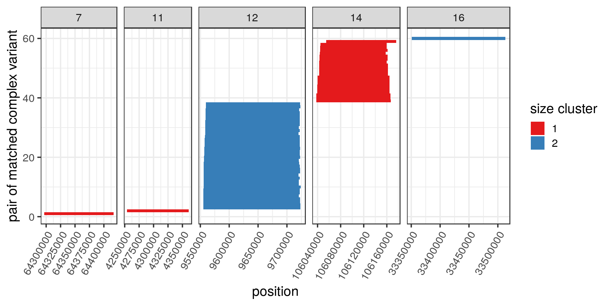
Some do cluster together in the genome and, looking up a few of them, they seem to be in segmental duplications.
| chr | types | methods | coord |
|---|---|---|---|
| 7 | CPX_CPX | delly__delly | 7:64296630-64416847 |
| 11 | CPX_CPX | delly__delly | 11:4253841-4360790 |
| 12 | CPX_CPX | delly__delly | 12:9556527-9723033 |
| 14 | CPX_CPX | delly__delly | 14:106040016-106164465 |
| 16 | CPX_CPX | delly__delly_manta | 16:33350710-33513016 |
Effect on allele frequency estimates
What is the potential effect of these duplicated variants on the frequency annotation?
Below, I compare the allele frequencies of each variant and its potential duplicate.
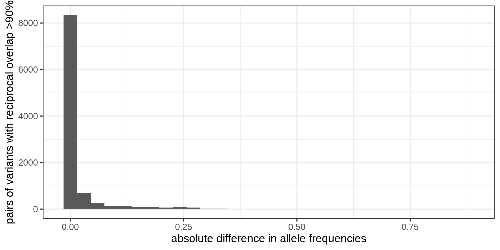
Most pairs of potential duplicates have similar frequencies. Does that mean that the frequencies of these variants are supposed to be the double of what we have?
Let’s zoom in to the long tail with the highest difference in allele frequency. To make the graph clearer, I compare the lowest frequency to the highest.
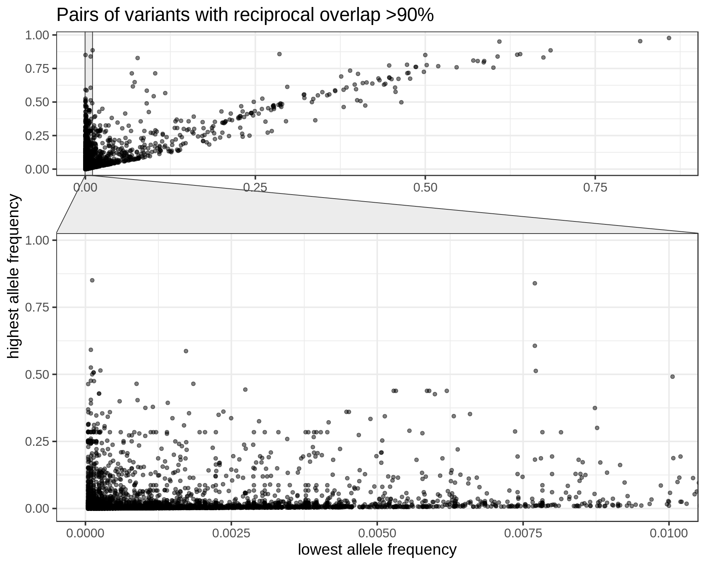
- Some SVs with low frequencies might be a duplicate of a SV with higher frequency.
- E.g. 827 of these variants have AF<0.1% while the other variant has AF>1%.
Although it’s only a minority of cases, we should be careful when matching our SVs to this catalog. Otherwise we might think that a variant is rarer than it is. Instead of annotating a SV with the allele frequency of the most similar SV in gnomAD-SV, a more robust strategy would be to use the maximum frequency across all SVs that are similar enough. That’s what we had done when annotating CNVs in our epilepsy study, although we were being maybe too conservative by considering any overlapping SV. For short deletions it’s fine, but in general something like reciprocal overlap > XX% would be less conservative.
GiaB comparison to investigate sequence resolution
The Genome in a Bottle consortium combined many types of techonologies (ultra deep short-read, linked-reads, long reads, optical mapping) to generate a high-quality SV catalog. Maybe not all variants are correct but it’s one of the best quality catalog we have. I want to quickly compare these SVs with the ones in the gnomAD catalog. If many variants look exactly the same in both datasets, it would be good evidence that they are both sequence-resolved.
I downloaded the NIST SVs Integration v0.6. This catalog also uses GRCh37. It includes short indels that I decided to filter out, keeping only variants of size 50 bp or more.
| SVTYPE | n | mean.bp | min.bp | max.bp |
|---|---|---|---|---|
| DEL | 14,588 | 1,715 | 50 | 997,115 |
| INS | 15,432 | 595 | 50 | 125,187 |
I’m curious to compare the exact breakpoint locations of SVs shared by both catalogs. Do they have exactly the same breakpoints/sequence? To make things easier let’s just look at deletions.
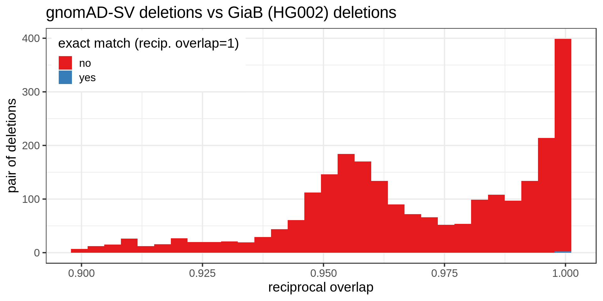
Many deletions in the gnomAD catalog are extremely similar to the GiaB dataset but not exactly the same. Some examples (randomly selected):
| seqnames | start | end | SVTYPE | SVLEN | catalog |
|---|---|---|---|---|---|
| 7 | 93541818 | 93542540 | DEL | 720 | GiaB |
| 7 | 93541816 | 93542539 | DEL | 723 | gnomAD |
| 2 | 34523655 | 34525720 | DEL | 2065 | GiaB |
| 2 | 34523656 | 34525719 | DEL | 2063 | gnomAD |
| X | 70424308 | 70430224 | DEL | 5916 | GiaB |
| X | 70424367 | 70430283 | DEL | 5916 | gnomAD |
| 9 | 96500161 | 96503043 | DEL | 2882 | GiaB |
| 9 | 96500163 | 96503042 | DEL | 2879 | gnomAD |
| 1 | 83125959 | 83127570 | DEL | 1611 | GiaB |
| 1 | 83125976 | 83127569 | DEL | 1593 | gnomAD |
| 12 | 69255776 | 69256518 | DEL | 742 | GiaB |
| 12 | 69255779 | 69256517 | DEL | 738 | gnomAD |
This quick comparison suggests that the variants are not really sequence-resolved. In gnomAD, the GiaB dataset, or both, the breakpoints might have a few errors. That will be important when genotyping these SVs or injecting them in genome graphs.
Of note, I’m not sure if the variants were left-aligned. In this case it wouldn’t make a big difference because we see that the deletions are discordant in term of size also. Still, ideally both VCF should be normalized first to better estimate how many deletions are exactly matched.
CHR2 and END
CHR2 is supposed to be the “Chromosome for END coordinate”. However I noticed that it might not be the case sometimes. For example, when CHR2 is different from #CHROM but the END is very close to the variant’s position. In those cases it might be that the END was set to the position in the #CHROM/POS side, like for insertions for example.
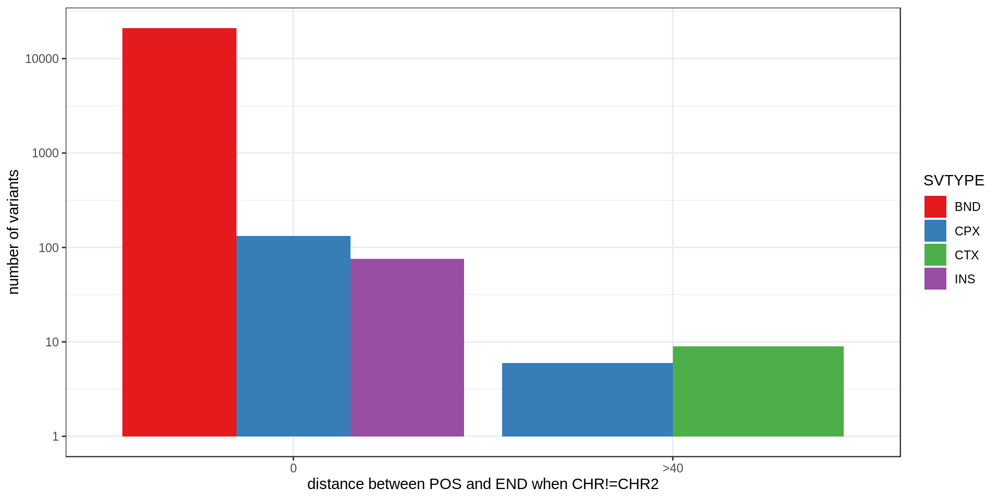
| filter.pass | SVTYPE | pos.equal.end | pos.20bp.end |
|---|---|---|---|
| FALSE | BND | 21,079 | 21,079 |
| FALSE | CPX | 1 | 1 |
| FALSE | INS | 1 | 1 |
| TRUE | CPX | 132 | 132 |
| TRUE | INS | 75 | 75 |
| TRUE | CTX | 0 | 0 |
It happens a lot (the y-axis is log-scale) but mostly in variants without a FILTER=PASS. Just a few dozens variants with FILTER=PASS may have a problem with their CHR2 or END.
Some examples:
## seqnames start end width strand paramRangeID REF ALT QUAL
## 1 1 8620717 8620717 1 * <NA> N <INS> 999
## 2 1 9121444 9121444 1 * <NA> N <CPX> 331
## 3 1 23636591 23636591 1 * <NA> N <CPX> 330
## 4 1 30893626 30893626 1 * <NA> N <INS> 534
## 5 1 59880893 59880893 1 * <NA> N <INS> 351
## 6 1 66188203 66188203 1 * <NA> N <INS> 175
## FILTER SVTYPE SVLEN END CHR2 CPX_TYPE methods ID
## 1 PASS INS 277 8620717 22 <NA> manta gnomAD_v2_INS_1_295
## 2 PASS CPX 718 9121444 14 dDUP manta gnomAD_v2_CPX_1_20
## 3 PASS CPX 270 23636591 2 dDUP manta gnomAD_v2_CPX_1_57
## 4 PASS INS 172 30893626 X <NA> manta gnomAD_v2_INS_1_1114
## 5 PASS INS 340 59880893 2 <NA> manta gnomAD_v2_INS_1_2293
## 6 PASS INS 344 66188203 7 <NA> manta gnomAD_v2_INS_1_2601
## AF
## 1 0.000047
## 2 0.225787
## 3 0.000047
## 4 0.001762
## 5 0.001261
## 6 0.000047